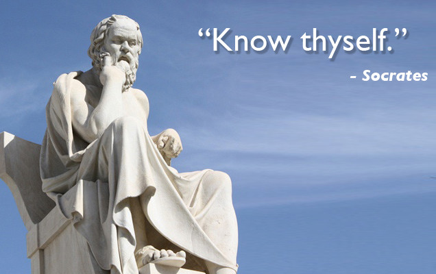
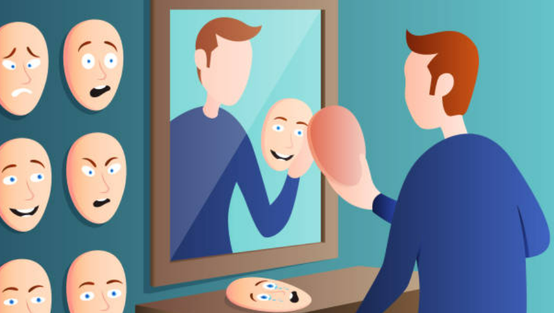

About Me
Philosophical Self
This section explores my philosophical beliefs, values, and the fundamental principles that guide my thinking.
Based on our discussion about the Philosophical Self, as well as the theories of some philosphers. The theory that sticked with me the most is Socrates' "Know Thyself." His theory was all about believing that self-knowledge is the key to understanding the world and living a good life. This really sticked with me because personally, I think that by understanding ourselves better, we can make better decisions, have healthier realationships with other persons, and find more meaning in our lives. This is like, if we don't know who we really are, what we value in life, and what our strenghts and weaknesses are, we might end up living a life that doesn't fit who we really are.

Socio-anthropological Self
This section delves into my understanding of society, culture, and human behavior from a sociological and anthropological perspective.
Based on our previous topic about the theories under Socio-anthropological Self, I resonated the most with Charles Cooley's theory, "The Looking Glass Self." I often see myself based on how other people think of me. It's like I'm looking in a mirror, but the mirror is actually other people's faces and reactions. It's kinda crazy when you think about it, but it makes a lot of sense when I look at my own life. In elementary school, I really wanted to be part of the "cool" group. I started dressing like them, listening to their music, and even trying to act like them. But it never felt right. I realized I was trying to be someone I wasn't, just to fit in. This theory helped me understand that I was trying to create a "self" based on what I thought they valued, not what I valued.

Psychological Self
This section explores my psychological characteristics, mental processes, and the internal aspects of my consciousness and personality.
Based on our previous topic about the theories under Psychological Self, I resonated the most with Erik Erikson's "Psychosocial Theory." This theory is about how our personality develops through different stages of life, and how each stage has its own challenges and tasks we need to navigate and go through. I really connected with this theory because it helped me understand how my past experiences and the challenges that I've faced have shaped who I am today.